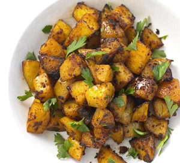

Spanish Potatoes

Description
These smokey, spiced potatoes are a great accompaniment for white fish or chicken
Ingredients
- 2 tbsp oil
- 3 tbsp tomato purée
- 1 tsp smoked paprikia
- 800g potato, cut into small chuncks
- 4 garlic cloves
- juice of ½ lemon
- handful flat-leaf parsley leaves, roughly chopped
Steps
- Heat oven to 180C/fan 160C/gas 4
- Mix the oil, tomato purée and paprika together, then coat the potatoes thoroughly in it.
- Squash the garlic in its skin with the flat of a knife and place on a baking tray with the potatoes
- Season well with salt and pepper, then roast for 40 mins, turning halfway through, until the potatoes have crisped up and are fluffy inside.
- Five mins before the end of cooking, sprinkle over the lemon juice and return to the oven
- Serve with the parsley scattered over.